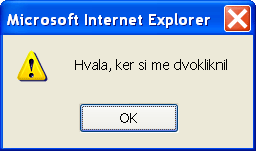

S stavki, ki smo jih spoznali v prejšnjem poglavju, in z malo vaje, lahko pišemo že kar spodobne programe JavaScript. Vendar se pozoren bralec še vedno ne bo mogel znebiti občutka, da je spletna stran, ki jo zgradimo s pridobljenim znanjem, še vedno preveč statična. Ko je enkrat naložena, se na njej nič več ne dogaja. Lastnost prave programske opreme je, da se odziva na različne dogodke (angl. event), kot, na primer, kadar uporabnik klikne z miško ali pritisne tipko na tipkovnici.
Tako kot prebivalci mesta Gogi, tudi brskalnik neprestano čaka, da se zgodi kak dogodek. Vendar se brskalnik sam od sebe ne bo odzival na dogodke. Oblikovalec spletne strani je tisti, ki določa, na katere dogodke bo stran reagirala in na kakšen način. Programer vsakemu dogodku, za katerega želi, da se stran nanj odzove, priredi poseben upravljalnik dogodka (angl. event handler). Upravljalnik dogodka ni nič drugega kot del programske kode, ki se izvrši kot odgovor na dogodek. Izvajanju takšne programske kode pravimo tudi upravljanje z dogodki (angl. event handling).
JavaScript ima vgrajen zelo enostaven mehanizem upravljanja z dogodki. Ker se dogodki vedno zgodijo v povezavi z določenim elementom XHTML, ustvarimo povezavo z upravljalnikom dogodka preprosto prek ustrezne lastnosti elementa, za katerega želimo upravljati dogodek. Na primer, če želimo, da se ob dvokliku (angl. double click) na odstavek pokaže okno s sporočilom "Hvala, ker si me dvokliknil", potem lastnost ondblclick elementa p nastavimo na vrednost alert("Hvala, ker si me dvokliknil"). Spomnimo se, da morajo biti vse vrednosti lastnosti v enojnih ali dvojnih navednicah. Doslej smo vedno uporabljali dvojne navednice, ker pa sedaj uporabimo dvojne navednice že za besedilo, ki ga podajamo funkciji alert(), tokrat uporabimo enojne navednice:
<p ondblclick='alert("Hvala, ker si me dvokliknil")'>
vsebina odstavka
</p>
Funkcija alert() (slov. alarm) je, podobno kot funkciji confirm() in prompt(), vgrajena funkcija jezika JavaScript. Ta funkcija prikaže pogovorno okno z ustreznim sporočilom in gumbom "OK" oziroma "Potrdi":
V naslednji tabeli je zbranih nekaj lastnosti za povezovanje elementov z upravljalniki dogodkov:
| dogodek | lastnost | opis |
|---|---|---|
| žarišče | onfocus | element je pridobil žarišče (angl. focus) |
| izguba žarišča | onblur | element je izgubil žarišče |
| klik | onclick | uporabnik je z miško kliknil na element |
| dvoklik | ondblclick | uporabnik je z miško dvokliknil na element |
| pritisk tipke | onkeypress | uporabnik je pritisnil tipko na tipkovnici (element mora biti v žarišču) |
| prelet miške | onmouseover | uporabnik je zapeljal miško nad element |
| prelet miške | onmouseout | uporabnik je umaknil miško z elementa |
| sprememba besedila | onchange | besedilo v urejevalnem polju se je spremenilo, polje pa je izgubilo žarišče. V izbirnem seznamu se ta dogodek sproži ob spremembi izbire |
| nalaganje končano | onload | slika ali dokument sta se do konca naložila v brskalnik |
| sprememba velikosti | onresize | uporabnik je spremenil velikost okna |
| izhod | onunload | uporabnik je zapustil dokument |
Poglejmo si še enostaven primer upravljanja z dogodki.
Včasih si želimo ukrepati, če uporabnik določen čas ne stori ničesar. V takem primeru nastavimo budilko, ki se bo sprožila, ko bo pretekel določen čas (angl. time out). S pomočjo vgrajene funkcije setTimeout() določimo, koliko časa naj preteče, preden se sproži dogodek, in določimo upravljalnik dogodka. Poglejmo si preprost primer, ki po treh sekundah pokaže pogovorno okno.
Ko budilko enkrat nastavimo, bo po pretečenem času v vsakem primeru sprožila dogodek. Če se vmes premislimo, ker je na primer uporabnik le pravočasno reagiral, potem lahko budilko prekličemo s funkcijo clearTimeout().
Upravljalnik dogodka je navadno neka funkcija. Dokler uporabljamo samo vgrajene funkcije jezika JavaScript, si ne moremo obetati kaj prida zabave, saj smo precej omejeni v tem, kako se lahko na dogodke odzivamo. Nujno je torej, da se naučimo pisati in uporabljati lastne funkcije.
Različne vgrajene funkcije jezika JavaScript kličemo že, odkar jezik spoznavamo. Ker se mehanizem klica vgrajene funkcije prav nič ne razlikuje od klica funkcije, ki jo napišemo sami, si najprej podrobneje poglejmo, kako funkcije kličemo in kaj se ob klicu zgodi.
Klic funkcije (angl. function call) je običajen izraz oziroma stavek, ki se izvede, ko pride na vrsto. V tem oziru klic funkcije sledi pravilom, ki smo jih v zvezi z izrazi in stavki spoznali v prejšnjih dveh poglavjih. Najosnovnejši klic funkcije je sestavljen iz njenega imena, ki mu sledi par oklepajev:
imeFunkcije()
|
Funkcija v resnici ni nič drugega, kot poimenovan blok programskih stavkov, na katere se sklicujemo in jih izvajamo kot enoto. Stavki so v funkciji združeni smiselno, tako da opravljajo neko navzven zaključeno opravilo. Na primer, prikažejo pogovorno okno ali izračunajo sinus podanega kota.
Če je funkcija definirana kot del objekta, potem moramo pred ime funkcije postaviti še ime objekta, vmes pa pišemo piko (.):
imeObjekta.imeFunkcije()
|
Takšni funkciji navadno pravimo tudi postopek (angl. method). O objektih bomo govorili podrobno šele v prihodnjem poglavju, zato kar brez panike.
Funkciji lahko ob klicu podamo tudi enega ali več argumentov (angl. argument) oziroma parametrov (angl. parameter), ki jih ločimo z vejicami:
imeFunkcije(parameter_1, parameter_2, ..., parameter_n)
|
Parametri so vhodni podatki, ki jih določene funkcije potrebujejo, da lahko izvršijo predpisano nalogo. Na primer, funkciji, ki izračuna sinus kota, moramo nujno podati vhodni parameter (kot), sicer nima kaj računati. In funkciji write() vedno podajamo parameter, ki predstavlja besedilo, ki naj ga ta funkcija izpiše v oknu brskalnika:
document.write("Tale znakovni niz je parameter funkcije write");
Nekatere funkcije ob klicu vrnejo (angl. return) vrednost. Takšne funkcije lahko uporabimo kot kateri koli drug izraz v povezavi z ustreznimi operatorji. Pogosto jih bomo klicali kot samostojen izraz na desni strani priredilnega operatorja. Primer, ki smo ga že srečali, je funkcija prompt(), ki pokaže pogovorno okno in vrne besedilo, ki ga uporabnik vanj vtipka:
odgovor = prompt("Vnesi vrednost:", "0");
Takoj po klicu funkcije se prikaže pogovorno okno z besedilom, ki smo ga funkciji podali kot prvi parameter. Pogovorno okno vsebuje še polje za vnos besedila ter gumba "OK" in "Cancel" oziroma "Potrdi" in "Prekliči". V polju za vnos besedila se pokaže vrednost, ki smo jo podali kot drugi parameter funkcije prompt(), in to besedilo lahko uporabnik v pogovornem oknu seveda spremeni. Če uporabnik na koncu pritisne "OK" oziroma "Potrdi", potem se izvajanje funkcije konča, funkcija pa vrne vrednost, ki je bila v tistem hipu vpisana v polju za vnos besedila. S stališča priredilnega operatorja (=) je klic funkcije običajen izraz, ki ima svojo vrednost. Ta vrednost se v gornjem primeru prenese v spremenljivko odgovor na levi strani.
Z definicijo funkcije (angl. function definition) določimo, kaj bo funkcija počela, oziroma natančneje, kakšna programska koda se bo izvršila ob njenem klicu. Funkcijo, ki ne sprejema parametrov in ne vrača vrednosti, definiramo takole:
function imeFunkcije()
{
//stavki JavaScript
}
|
Definicija se začne z rezervirano besedo function, ki ji sledi ime funkcije s parom oklepajev. Pri izbiri imena funkcije veljajo ista pravila kot za spremenljivke. Stavke, ki določajo, kaj bo funkcija počela, zapišemo v par zavitih oklepajev. Ti stavki se ne izvršijo ob nalaganju strani, ampak šele ob klicu funkcije. Definicije funkcij zato pišemo v glavo dokumenta. Poglejmo si primer definicije in klica enostavne funkcije.
Funkcijo, ki sprejema parametre in vrača vrednost, definiramo takole:
function imeFunkcije(param_1, param_2, ..., param_n)
{
//stavki JavaScript
return vrni;
}
|
Enega ali več parametrov zapišemo znotraj para oklepajev za imenom funkcije in jih ločimo z vejicami. Ko izvajanje funkcije doseže stavek return, se funkcija konča in vrne vrednost izraza vrni, ki stoji za rezervirano besedo return. Niti parametri niti stavek return niso obvezni. Tako je možna tudi funkcija s parametri, ki ne vrača vrednosti, oziroma funkcija brez parametrov, ki vrača vrednost.
Ko funkcijo, ki sprejema parametre, kličemo, moramo paziti, da ji podamo točno toliko parametrov, kolikor smo jih določili v njeni definiciji. Klic gornje funkcije izgleda takole:
imeFunkcije(izraz_1, izraz_2, ..., izraz_n)
Pomembno je, da razumemo, kaj se ob klicu dogaja s parametri. Parametre, ki jih podajamo v klicu funkcije, imenujemo tudi dejanski parametri. To so v resnici poljubni izrazi, ki imajo konkretne vrednosti. Parametre, ki jih navajamo v definiciji funkcije, imenujemo formalni parametri. Ti parametri so v resnici spremenljivke, ki se znotraj funkcije uporabljajo kot običajne spremenljivke. Ob klicu funkcije se v formalne parametre zapišejo vrednosti istoležnih dejanskih parametrov. Tako ob gornjem klicu parameter param_1 dobi vrednost izraza izraz_1, parameter param_2 dobi vrednost izraza izraz_2 in tako naprej vse do zadnjega parametra.
Napišimo zdaj definicijo funkcije, ki izračuna faktorsko potenco oziroma fakulteto vhodnega parametra. Fakulteta nenegativnega števila n je določena kot zmnožek vseh naravnih števil do vključno n:
n! = 1·2·3· ... ·n
Fakulteta ničle je po definiciji enaka ena:
0! = 1
Tukaj je delujoč primer. Funkcijo za izračun fakultete smo poimenovali fakulteta() in jo definirali takole:
function fakulteta(n)
{
var i = 1;
for (; n > 0; n--)
{
i *= n;
}
return i;
}
Vzemimo za primer, da to funkcijo kličemo z dejanskim parametrom 7. Ob klicu se formalnemu parametru n najprej priredi vrednost 7. V zanki for se nato najprej preveri, če je spremenljivka n večja od nič. Če je, se takoj nato spremenljivka i pomnoži z vrednostjo spremenljivke n, nakar se vrednost n-ja zmanjša za ena. Po tem spet pride na vrsto preverjanje, če je n večji od nič, spet množenje spremenljivke i z n in spet zmanjšanje spremenljivke n za ena. Ko pride n do nič, se izvajanje zanke ustavi in funkcija vrne vrednost spremenljivke i, ki je sedaj enaka fakulteti vhodnega parametra funkcije.
S pomočjo funkcije fakulteta() lahko izračunamo, koliko nas bo stal listič za Loto. Vemo, da ena vplačana kombinacija stane 50 SIT, izračunati moramo le, koliko kombinacij smo dejansko odkrižali na lističu. Število različnih kombinacij, ki jih dobimo, če izmed m elementov izbiramo n elementov, izračunamo z binomskim simbolom:
| ( | m n |
) |
|
V našem primeru, kjer nas zanima število vplačanih kombinacij za Loto, je n vedno enak 7, saj je vsaka kombinacija sestavljena iz sedmih številk. m je enak številu odkrižanih številk na lističu.
Funkcijo binom() lahko definiramo z uporabo prej napisane funkcije fakulteta():
function binom(m, n)
{
return fakulteta(m) / (fakulteta(n) * fakulteta(n - m));
}
Oglejmo si primer, ki izračuna ceno lističa z 10 odkrižanimi številkami.
Nekateri bralci ste morda že zaslutili problem, o katerem smo doslej molčali, vendar si tega brez resnih posledic prav dolgo ne bomo mogli več privoščiti. Nastopi vprašanje, ali lahko v definiciji funkcije za formalni parameter uporabimo ime, ki smo ga že uporabili drugje v programu. Videli bomo, da je to možno. Takoj zatem se postavi novo vprašanje, kako ločimo med sabo dve različni spremenljivki z istim imenom. Odgovor na to vprašanje bomo našli v razlagi pojma območje spremenljivke (angl. variable scope).
Območje spremenljivke pomeni območje programske kode, od koder imamo dostop do te spremenljivke. To pomeni, da lahko spremenljivki spremenimo vrednost oziroma njeno vrednost uporabimo. Spoznali bomo dve območji:
Osvetlimo na novo osvojene pojme s primerom.
V jeziku JavaScript spremenljivke ni nujno potrebno deklarirati, čeprav je priporočljivo, da jo. Nedeklarirana spremenljivka postane ob prvi uporabi globalna spremenljivka, kar ima lahko za posledico nepredvidljivo obnašanje, če s tem nismo računali. V primeru, ki si ga bomo ogledali zdaj, smo želeli izpisati število vplačanih kombinacij in ceno za vsa možna vplačila za Loto od 7 pa do 17 odkljukanih števil. Poizkusite razložiti, zakaj ne dobimo pravilnega izpisa?
Precej povezan z območjem spremenljivke je pojem obstoj spremenljivke. Ločimo dve vrsti obstoja:
Naslednji primer ilustrira pojem obstoja spremenljivke.
Ko je spletna stran enkrat naložena v oknu brskalnika, se ta še vedno lahko odziva na določene dogodke. Dogodki se zgodijo v povezavi z elementi jezika XHTML. Vsak dogodek, za katerega želimo, da se bo spletna stran nanj odzvala, moramo povezati z ustreznim upravljalnikom dogodka, ki je navadno zapisan v obliki funkcije. Povezavo ustvarimo preko ustrezne lastnosti elementa, katerega vrednost nastavimo preprosto na klic funkcije, ki naj se izvrši ob dogodku. Klicana funkcija je lahko vgrajena funkcija jezika JavaScript ali pa funkcija, ki smo jo definirali sami. Kadar želimo, da se bo dogodek zgodil, ko preteče določen čas, nastavimo budilko in jo povežemo z upravljalnikom dogodka s funkcijo setTimer().
Lastne funkcije moramo pred uporabo definirati. V definicijo funkcije zapišemo, kaj naj funkcija počne. Navodila zapišemo v obliki običajnih stavkov jezika JavaScript. Definicije funkcij pišemo v glavi dokumenta, saj se njihova vsebina ne izvede ob nalaganju dokumenta ampak šele, ko jih pokličemo. V definiciji funkcije naštejemo tudi vse formalne parametre, ki jih funkcija sprejme. Tem parametrom se vrednosti nastavijo ob klicu funkcije, ki mora vsebovati enako število dejanskih parametrov. Po vrsti se vsakemu formalnemu parametru priredi vrednost istoležnega dejanskega parametra. V primeru, da funkcija vsebuje stavek return, funkcija na koncu vrne vrednost. Klic takšne funkcije lahko uporabimo tako, kot uporabimo kateri koli izraz istega tipa. Vrednost takšnega izraza je enaka vrednosti, ki jo funkcija vrne.
S pojavom lastnih funkcij se pojavita še pojma območja in obstoja spremenljivk. Lokalne spremenljivke (to so spremenljivke, ki jih deklariramo v funkciji), so dostopne le funkciji, v kateri so deklarirane. Globalne spremenljivke (to so spremenljivke, ki jih deklariramo izven funkcije) so dostopne povsod, razen v funkcijah, v katerih obstaja lokalna spremenljivka z istim imenom, kot ga ima globalna spremenljivka. Globalne spremenljivke obstajajo (to je, hranijo svojo vrednost), dokler je stran naložena v brskalniku, lokalne spremenljivke pa le med časom izvajanja funkcije, v kateri so deklarirane.